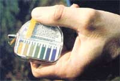
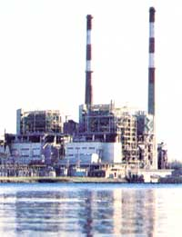
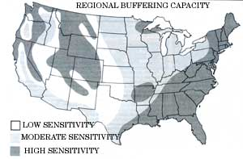

Issue # 73- January/February 1982
The natural cycle of rainfall and evaporation is our earth's method of cleansing itself. However, the stability of that fundamental cycle is currently in jeopardy because of...
You can measure the acidity or alkalinity of
your own drinking
water, pond, etc. with a litmus
papaer kit (available at most well
-equipped pharmacies). The
package you see in this
photo cost less than $5.00 and can
measure pH's between 4.5 and
7.5. The litmus is used by dipping
it into the solution to be tested,
then shaking off excess liquid.
The paper quickly changes color, and
the hue can be matched to the
key on the paper's package.
The litmus in this photograph indicates
a pH level of between 4.5 and 5.0.
MOM's Eco-Village lake showed
similar readings . . . definitely a
danger sign for the water's
inhabitants. In fact, we were
surprised (and alarmed) to
discover how low the
pH is in many area lakes, in the
Hendersonville city water supply,
and in staff members' private
wells.
The largest contributors to acid
precipitation are coal
-fired power plants.
Next to air, without which we could survive for only a few minutes, water is the compound most necessary to human life. Not only do we drink it-to help our bodies perform a number of vital functions-but we cleanse ourselves with it, grow food with it, and harvest the bounty of its lakes and streams. In fact, throughout history the single most important reason for a human's picking a spot to live has usually been the presence of an adequate supply of clean water.
Of course, Western civilization's attitude toward the precious liquid has changed somewhat in the last 100 years. Water is now delivered to most people in developed countries through mazes of pipes and faucets, rather than directly from wells or streams. And it's entirely possible that the attitudes engendered by take-it-for-granted tap water have helped cause the pollution and shortage problems we face today. In little more than a decade, the threat to our drinking supplies has become a top-priority concern.
In fact, ten years ago few people even recognized the danger in what was then a puzzling new phenomenon ... acid precipitation. Acid rain, as it's often called, is a direct result of the burning of fossil fuels, and it's the first water-quality problem that's managing to cross state and national boundaries on a daily basis.
WHERE DOES IT COME FROM?
Acidified precipitates (which can include rain, snow, other forms of atmospheric moisture, and dry acidic particles) are produced when sulfur oxides (SO 2 . and S0 3 ) or nitrogen oxides (NOx)-or, to a minor extent, hydrogen chloride (HCI)-react with air and water in the presence of sunlight. Though the actual mechanisms that produce acid precipitation are not thoroughly understood, there's little question that they result in sulfuric, nitric, and/or hydrochloric acid buildup that can render rainwater as sour as vinegar!
The primary sources of sulfur emissions (which are estimated to cause about two-thirds of all acid precipitation today) are coal-fired power plants (Ohio's electric utilities are the largest producers in the U.S.) and smelters (International Nickel in Sudbury, Ontario pumps out 1%-roughly 2,500 tons-of the world's daily total). Nitrogen emissions, on the other hand, come largely from transportation sources (about 40%), with effluents from power plants and industry making up the rest.
Though such pollutants usually remain in the atmosphere for no more than five days (NO hangs on longer than does SO 2 .), they've been known to show up as far as 700 miles downwind of their sources, in the form of sulfates and nitrates. These two substances are the major producers of acid rain. And ironically enough, if it weren't for the Clean Air Act of 1970, they probably wouldn't have gotten a chance to travel so far and do so much harm.
In order to comply with the act's standards, many utilities and industries-in the early 1970's-built tall smokestacks to disperse emissions (which, for the purpose of law enforcement, are measured at ground, or nose, level). Though no one anticipated the problem at the time, the superstacks (International Nickel's is 1,250 feet high) help sulfur and nitrogen stay airborne long enough to cause full-fledged acid precipitation.
Of course, coal-fired plants that have been built since the passage of the Clean Air Act are equipped with sulfur scrubbers and are relatively clean. The older (uncontrolled) plants now spew out most of the sulfur oxide emissions that enter the atmosphere. Consequently, it's of vital concern that the oil-fired power plants currently being converted to coal not be considered "old"-and thus unconrollable-for regulatory purposes.
Nitrogen oxide, the other major cause of acid precipitation, is much more difficult to deal with than is sulfur oxide. Because there is no suitable control technology yet, NO x production is likely to remain essentially unchecked for as much as a decade. Rollbacks and/or delays in clean air standards (both of which are advocated by the Reagan administration) could further postpone effective control of nitrogen oxide emissions.
JUST HOW ACID DOES IT RAIN?
The acidity or alkalinity of a solution-as many of you already know-is measured numerically (the levels range from 0 to 14) on what's called a pH scale. A pH of 7 is neutral, while smaller numbers are acid and larger ones are basic (alkaline). The rating is actually a measure of the concentration of hydrogen ions ... and it builds logarithmically (that is, pH6 is 10 times more acidic than pH7, pH5 100 times more than pH7, and pH4 1,000 times more than pH7).
The pH of pure rainfall happens to be slightly lower than neutral (about pH5.6), because the moisture reacts with naturally occurring carbon dioxide in the atmosphere to produce dilute carbonic acid. Hence, precipitation that has a pH of less than 5.6 is generally considered to have been made acid by some human activity. Historic records, obtained from core samples of polar ice, indicate that world precipitation has been slowly growing more acid over the last 100 years. (Episodes of acid rain have occurred naturally for eons-caused by sulfur released from volcanic eruptions, for example-but these sources contribute a very small part of this century's growing total.)
Though Swedish scientists were the first to pinpoint the harmful effects of acid precipitation, U.S. researchers have been keeping track of rainfall pH since the 1950's. As far back as the middle of that decade, precipitation with a pH of 4.5 was occasionally recorded in a few areas of the Northeast. But by 1979 the average pH of rainfall in the entire eastern U.S. had fallen to below 4.5 . . . and many areas now regularly report pH readings as low as 3.4 (close to the acidity of vinegar). Nor is acid precipitation limited to the eastern U.S. In the Los Angeles basin, for example, typical pH levels have fallen from around 7 in the 1950's to between 4.5 and 5 at present.
WHAT DOES IT DO?
The overall effect that acid precipitation has on a particular ecosystem depends largely upon the soil and water's ability to tolerate the incoming low pH liquid. Areas rich in calcium or magnesium carbonates (limestone and dolomite, respectively) and/or organic matter are, as yet, able to buffer the acidity of the rain, in much the same fashion that an antacid tablet relieves a sour stomach. Ironically, the Midwest (where a large portion of the sulfur oxide emissions are produced) has good buffering capability overall. But down wind-in New York, Pennsylvania, and West Virginia-the soils are formed mostly from igneous rock that's low in buffering compounds.
In the Adirondack Mountain region of New York (which has been the hardest-hit area of the U.S.), over 200 lakes are now considered acidified, with an average pH of less than 4.5. (Remember, that's 500 times more acid than a normal lake.) To the north-in Ontario, Canada-400-lakes have been lost to acid precipitation, and 48,000 more are threatened. (And despite the prodigious emissions of the nickel plant in Sudbury, it's estimated that two-thirds of Canada's acid precipitation results from airborne contaminants produced in the U.S.A.)
In order to appreciate the potential damage we're talking about, it's important to understand what happens when a body of water goes acid. More than 50% of the lakes with pH readings of less than 5 have no fish at all. Even at pH6.5 the reproductive capacity of most trout species begins to drop ... and the fry that do survive are increasingly prone to genetic defects. Often, the first hint that a lake is going acid comes from people who fish there, when they report a limited catch of large fish (which grow rapidly as a result of not having to compete with new generations for food) and few, if any, smaller ones.
However, scientists believe that the eventual death of the fish population in an acid lake isn't caused directly by the low pH. Rather, it's thought that toxic metals which are mobilized by the acid precipitation-aluminum and mercury are the two most prominent offenders-do most of the damage.
Other forms of aquatic life are also severely affected by low pH. The bacteria that are normally present in freshwater lakes tend to die back as pH drops, while fungi are more likely to thrive. Consequently, organic matter (such as falling leaves) accumulates on the lake's bottom instead of being consumed. In fact, so many bacterial organisms, which are normally suspended in the water, die off that acid lakes are often very clear. (A sure sign of a lake with low pH is the growth of sphagnum moss on the bottom . . . since that plant can adapt to an aquatic life only in acid water.)
Because it's been less than ten years since scientists began to study the effects of acid rain, our understanding of the problems it causes is by no means complete. While we are beginning to catalog the effects of low pH on freshwater lakes, research into the actions of acid precipitation upon complex land-based ecosystems has barely started.
Still, even the fragmentary available evidence points to a number of dangerous terrestrial effects ... including threats to human health. The presence of sulfate and nitrate compounds in the air over the Northeast has been shown to correlate with a pollution-related death rate (resulting from lung disorders and cancer) that is roughly twice that of areas with cleaner air.
Acid rain is also damaging the quality of domestic water supplies, both private and public. Folks who depend on cisterns for their potable water may have dangerous levels of lead, zinc, and/or aluminum in their drinking supplies ... resulting from deterioration of the catchments and from suspended material. Throughout much of the East, collecting rainwater for drinking is unsafe. Furthermore, some reservoirs have become so acidic that they must be treated (largely with lime) at tremendous expense. Low-pH water also increases the corrosion rate of many types of plumbing ... contaminating drinking supplies with copper, zinc, or lead from pipes.
In many regions it's no longer healthful to eat fish caught from local lakes, since the creatures are likely to contain dangerous concentrations of aluminum and/or mercury that have been liberated by acid precipitation. Officials in New York advise that children and pregnant women not eat any fish caught in the state's lakes.
Acid precipitation also degrades soil quality and can result in stunted plant growth. Calcium and magnesium are leached from the soil by low-pH rain, and such elementary processes as reproduction, nitrogen fixation, and photosynthesis may be slowed or interrupted. The protective waxy coating on leaves is sometimes stripped away by acid rain, and the presence of low-pH precipitation makes it especially likely that greenery will draw toxins, such as lead and cadmium, from the soil. Some crops are more affected by these problems than others ... but we do know, for example, that soybean yields in some areas are already being reduced by acid precipitation.
Valuable inanimate materials are also feeling the bite of contaminated rain, snow, etc. Buildings made from limestone and marble-substances that are especially susceptible-are showing prominent pitting (the U.S. Capitol is a case in point). Even relatively acid-resistant granite structures are being damaged... since calcium-based mortar is used to bond the blocks in such buildings. Furthermore, metals are more prone to corrosion in an acid environment. It's frightening to contemplate the dollar value of damage to automobiles that are rapidly rusting away because of acid rain.
If we continue to pour sulfur and nitrogen oxides into our atmosphere at the present rate, we face an ecological crisis, a significant risk to human health, and an economic loss that could be staggering. Unfortunately, such emissions are likely to increase through the year 2,000. According to the Environmental Protection Agency, sulfur emissions can be expected to rise by 10% to 20% in the next 20 years, and those of nitrogen oxides by at least 50%. The steps taken by Congress to modify the Clean Air Act in late 1981 or early 1982 will be the single most important influence on such developments.
Though there are no regulations today that deal directly with acid precipitation, there are methods of control available. By using stack scrubbers, low-sulfur coal, washed coal, and new technologies such as fluidized bed furnaces (see MOTHER N0.65, page 182, for an article on a home scale version of such a device), sulfur emissions could be cut by as much as 80%. The cost of doing so would be substantial, but might not be as high as utilities and our current government would have us think, and the expense involved in ignoring acid rain could prove to be much larger in the long run. However, the burning question is ... can we put a price tag on protecting our planet's ability to support life?
EDITOR'S NOTE: If you're concerned about acid rain, write to your representatives and senators (care of The Capitol, Washington, D.C. 20510).
|
 |
 |
 |